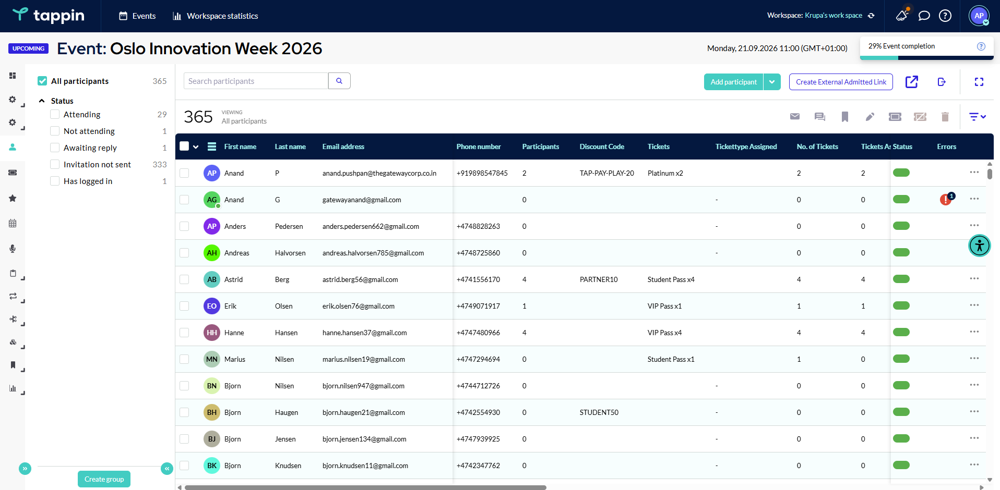

Tappin is the event check-in software Norway's leading events run on. QR scanning on iPad or phone. Self-service kiosks for big crowds. Personalized badges printed in real time. Works offline. Your front desk runs itself, pairing seamlessly with Tappin registration and the branded event app.

Set the tone of the entire event in the first 30 seconds. No queues, no fumbling for tickets, no apologies.
Attendees walk up with their phone. Volunteer scans. Badge prints. Welcome. The average check-in across our customers is 1.2 seconds, including badge print.
1.2-second average check-in. Bluetooth printers.
For 500+ person arrivals, deploy self-check-in kiosks. Attendees scan their email QR, confirm details, take a badge. Your volunteers focus on warmth, not throughput.
200+ per hour per kiosk. Walk-ins handled.
Your venue's Wi-Fi will let you down at exactly the wrong moment. Tappin keeps scanning, printing, and tracking, then syncs everything when connection returns.
Keep scanning when venue Wi-Fi drops.
Real-time dashboard shows who has arrived, who is en route based on email opens, and who hasn't checked in. Catering knows when to start, security knows the headcount.
Real-time dashboard. VIP alerts. No-show flags.
From 800 sign-ups to badges printed and check-in flowing, Tappin made it look easy. Our team finally got to enjoy the event we built.Book the same setup →
The Tappin event check-in software Norway runs on is built for the moments where the front door makes or breaks the day. Three customer profiles where Tappin is the right call:
When 800 people show up between 08:30 and 09:00, manual check-in becomes a queue. Tappin's QR check-in events Norway throughput handles 200+ attendees per hour per kiosk, and personalized event badge printing Norway keeps name badges in step.
Where the headcount and the right people in the room matter to security and protocol. Tappin's event access control supports VIP arrival alerts, photo capture on badges, security-zoned access, and full audit logs.
When Wi-Fi is unreliable, outdoor festivals, rural conference centres, training facilities, Tappin's offline mode keeps scanning and printing badges, then syncs everything when the connection returns.
Average end-to-end check-in time across our Norwegian customers is 1.2 seconds, including QR scan, attendee record retrieval, and badge print. The bottleneck becomes the printer's mechanical speed, not the software.
Almost nothing custom. iPads or iPhones for staff scanning. Optional Bluetooth label printers for instant event badge printing Norway. Self-service kiosks can be standard iPads on simple floor stands. The Tappin software runs in a browser, no specialised hardware required.
The Tappin event access control stays operational. Check-ins, badge prints and arrival tracking all continue offline. The system syncs everything automatically when connection returns, with no duplicate badges or lost records.
Yes. Run main entrance, VIP entrance, and per-room scanners simultaneously. Real-time arrival data populates a unified dashboard so hosts, catering and security see the same numbers at the same moment.
Tightly. Attendees register through Tappin event registration software and receive a QR in email + the branded event app. Scanning marks them present, prints a personalized badge, and unlocks engagement features in the app for that session.
Self-service kiosks let walk-ins register and check in on the spot. Staff can also register a walk-in from any check-in device in seconds, they receive their badge before stepping away from the desk.
20-minute demo. We'll show you check-in flow, badge templates, and live arrival data for your actual event size.